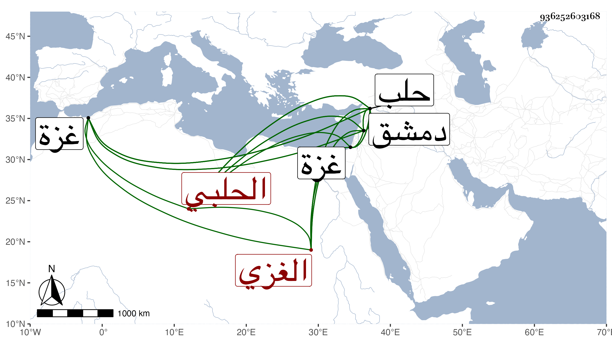

0902Sakhawi.DawLamic.ITO20230111-ara1.EIS1600.936252603168
Biography ID: 936252603168
378
محمد بن علي بن أحمد بن أبي البركات الشمس الغزي ثم الحلبي ويعرف بابن أبي البركات . ولد سنة ثمان وثلاثين وسبعمائة بغزة وتعانى الاشتغال بالقراآت فمهر واشتغل بدمشق في الفقه مدة وقطن حلب وأقبل على التلاوة والإقراء فانتفع به الحلبيون وأقرأ غالب أكابرهم وأقرأ الفقراء بغير أجرة ، وممن قرأ عليه ابن خطيب الناصرية وقال إنه رجل دين خير صالح من أهل القرآن مديم لإقرائه بالجامع الكبير بحلب احتسابا بحيث قرأه عليه غالب أولادها وانتفعوا به وله اشتغال مع ذلك في الفقه بدمشق وحلب ومداومة على الأمر بالمعروف والنهي عن المنكر ولا تأخذه في القيام مع الحق لومة لائم وكذا كان مداوما على التلاوة مع الشيخوخة وللناس فيه اعتقاد . مات في يوم الأربعاء تاسع عشر ربيع الأول سنة ست وعشرين وصلي عليه في يومه تقدم الناس البرهان الحلبي ، ذكره شيخنا في إنبائه باختصار وقال المعروف بالركاب بدل ابن أبي البركات ، وما علمت الصواب منهما .
